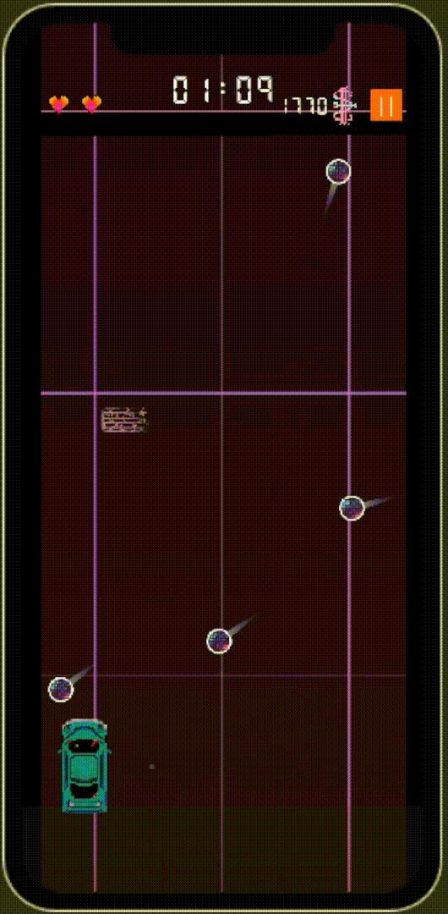
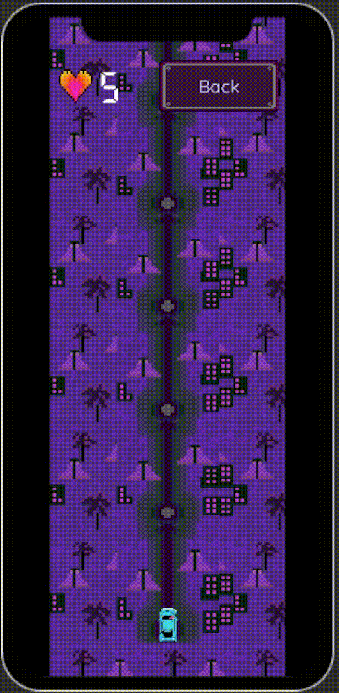
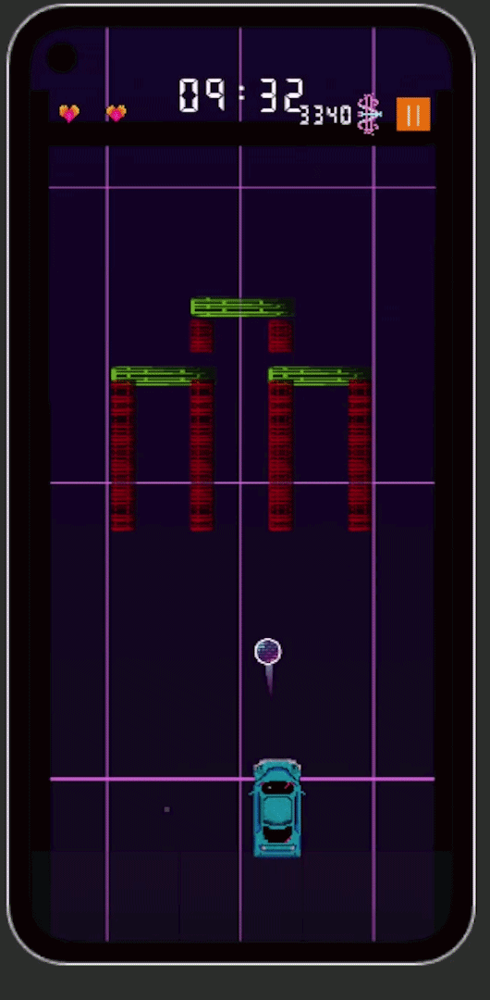
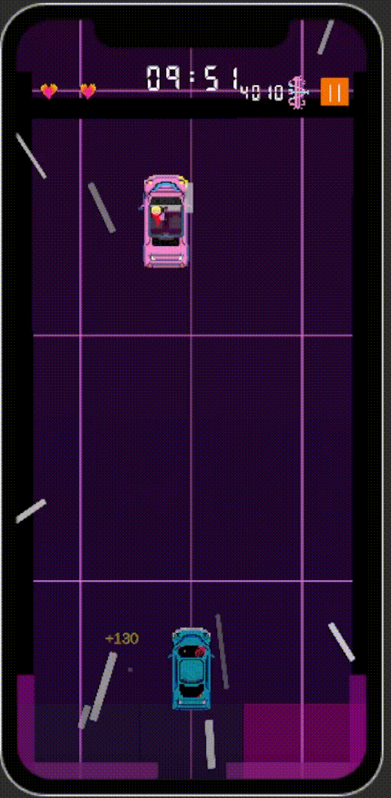
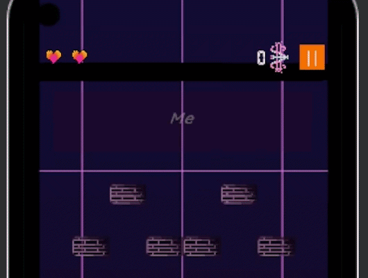
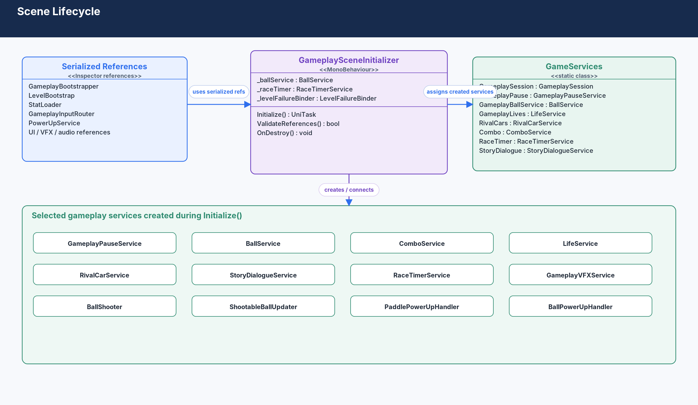
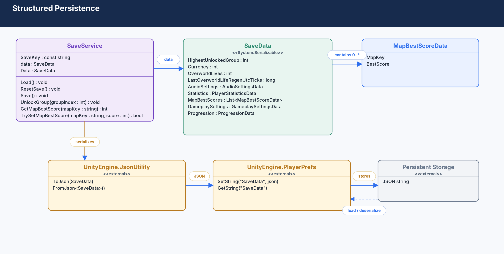
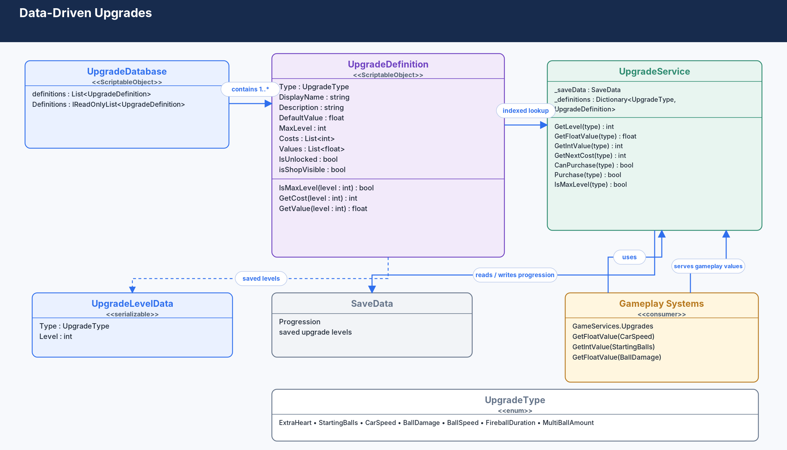
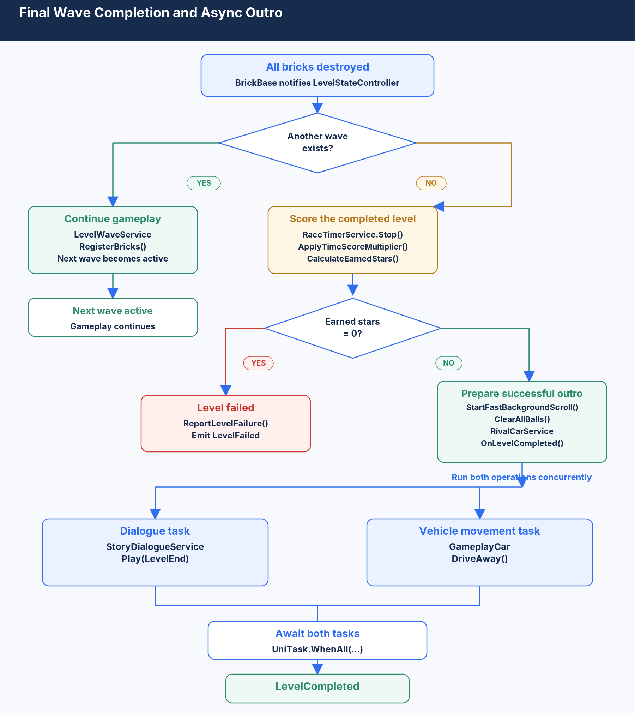

Wave-Based Level Flow
Levels are built from multiple waves. Clearing the current wave starts a transition into the next section; clearing the final wave moves into the level-ending flow and then back to overworld progression.
GAME PROJECT SHOWCASE
A mobile action game built around touch-controlled driving, ball-based obstacle clearing, timed levels, and persistent progression.
Solo project • 2026 - Present
Explore the Project

ABOUT THE PROJECT
Each level is a timed sequence of waves where the player steers horizontally, launches balls to clear obstacles, and manages a limited number of lives. Power-ups, scoring, opponent vehicles and changing wave layouts add variation throughout a level.
Between levels, the player returns to an overworld used for level selection and progression. Currency, upgrades, unlocks, best scores and other progression data persist between sessions.


TECHNOLOGIES USED
UniTask handles asynchronous gameplay flows, ScriptableObjects define configurable gameplay data, and persistent progression is serialized to JSON with Unity JsonUtility and stored through PlayerPrefs.
GAMEPLAY & SYSTEMS
Levels are built from multiple waves. Clearing the current wave starts a transition into the next section; clearing the final wave moves into the level-ending flow and then back to overworld progression.

Touch input controls the car and launches balls used to clear destructible obstacles. Ball lifecycle, shooting, wave state and related gameplay behaviour are handled by dedicated systems.

Opponent vehicles introduce an additional hazard during levels. They can interact directly with the player through collisions and are integrated with wave progression and level state.
The overworld handles level selection and unlock progression. Persistent data includes currency, upgrades, unlock state, regenerating overworld lives, settings, statistics and map best scores.
Upgrade definitions are configured separately from the player's saved upgrade levels, allowing gameplay systems to request the resulting values without depending on shop or save-data details.

UniTask is used for multi-step gameplay flows such as dialogue, wave transitions, car movement and the level outro. The final level flow can run dialogue and the player's drive-away sequence in parallel and continue only after both have finished.
TESTING APPROACH
Testing and debugging are part of normal development. New features are checked in isolation and again in the wider gameplay flow, with extra attention to mobile input, scene transitions, persistence and Android-specific behaviour.
Core behaviours such as input, ball lifecycle, wave completion, upgrades, failure states and progression are checked against their intended behaviour.
Interacting systems are tested together, particularly where input, pausing, opponent vehicles, balls, dialogue, timers and scene state affect one another.
Changes are retested against previously working flows, including pause/resume, retry behaviour, wave transitions, progression and Android lifecycle events.
Unity Console, stack traces and Android Logcat are used to trace runtime failures and platform-specific problems.
REPRESENTATIVE TEST COVERAGE
A small selection of real cases from development, including normal behaviour, integration cases and items that still require retesting.
| ID | Test | Expected Result | Status |
|---|---|---|---|
| MOB-01 | Touch and hold the left movement zone without dragging | Car moves left continuously while the touch is held | Passed |
| MOB-02 | Release the active movement touch | Ball is fired when the movement touch is released | Passed |
| MOB-03 | Touch UI while gameplay input is active | UI touch is ignored by gameplay movement input | Passed |
| MOB-04 | Send the game to the background during gameplay | Pause menu opens automatically and gameplay stops | Passed |
| MOB-05 | Run an Android build after progression or upgrade changes | Car still responds to touch input with a valid movement speed | Needs Retest |
| ID | Test | Expected Result | Status |
|---|---|---|---|
| LVL-01 | Clear all bricks in a normal wave | Current wave completes and the next wave transition starts | Passed |
| LVL-02 | Enter a wave transition | A new shootable ball is not available before the transition finishes | Needs Retest |
| LVL-03 | Complete the final wave | Race timer stops, score and stars are calculated, and the level outro begins | Passed |
| LVL-04 | Complete the final wave with zero stars | Level is reported as failed instead of completed | Passed |
| LVL-05 | Finish the level-end dialogue and car drive-away | Level completes only after both asynchronous sequences finish | Passed |
| LVL-06 | Defeat an opponent vehicle and activate the next one during the same level | The defeated opponent can exit while the next opponent becomes active | Passed |
| ID | Test | Expected Result | Status |
|---|---|---|---|
| PROG-01 | Purchase an upgrade in the shop | Upgrade level increases and its configured cost is deducted | Passed |
| PROG-02 | Restart or reload after purchasing an upgrade | Purchased upgrade level is restored from save data | Passed |
| PROG-03 | Upgrade car speed | Player movement uses the new CarSpeed value | Needs Retest on Android |
| PROG-04 | Start a level with zero overworld lives | The level cannot be started | Passed |
| PROG-05 | Press Retry from the Game Over screen | The level restarts without consuming a second overworld life | Passed |
TECHNICAL ARCHITECTURE
My Night Ride is split into focused gameplay and progression systems rather than concentrating behaviour in large MonoBehaviours. GameServices provides a central access point for shared systems, while GameplaySceneInitializer constructs, connects and tears down gameplay-scoped services.
GameplaySceneInitializer creates and connects gameplay services during scene setup, then explicitly unregisters observers, unbinds events, disposes the race timer and clears gameplay service references during teardown.

Runtime progression is held in a serializable SaveData model. SaveService converts it to JSON with JsonUtility and stores it through PlayerPrefs.

UpgradeDefinition ScriptableObjects hold configurable costs, values and maximum levels. UpgradeService combines those definitions with the player's saved upgrade levels and exposes the resulting values to gameplay.

LevelStateController handles the final-wave branch, scoring and star calculation. When the level succeeds, dialogue and the player's drive-away run concurrently through UniTask.WhenAll before the LevelCompleted event is raised.

CONCRETE EXAMPLE
GameServices.Upgrades.GetFloatValue(UpgradeType.CarSpeed)The movement controller can use the player's current car-speed value without needing to know how upgrade levels are configured, purchased or persisted.
PROJECT STATUS